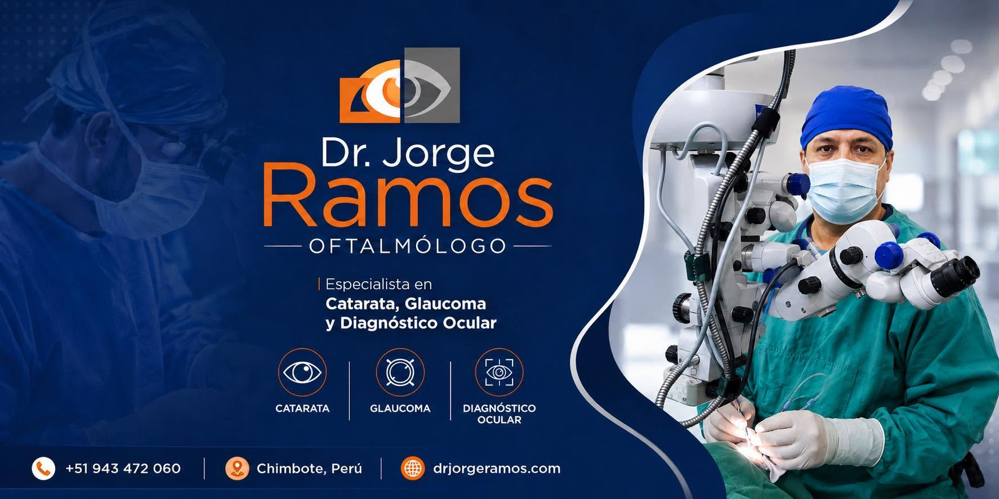

Recupera la claridad de tu visión
¿Ves borroso? ¿Las luces te molestan al conducir o leer? Podría ser catarata. El Dr. Jorge Ramos, especialista en Catarata, Glaucoma y Diagnóstico Ocular, te brinda una atención personalizada para ayudarte a recuperar una mejor calidad de vida.
Conoce Más
Cirugía de Catarata segura y efectiva
La cirugía de catarata es un procedimiento moderno que dura aproximadamente 30 minutos y permite recuperar una visión más clara para volver a disfrutar de tus actividades diarias con tranquilidad.
Más Información
Tu salud visual está en buenas manos
Atención especializada en Catarata, Glaucoma y Diagnóstico Ocular. Agenda una evaluación con el Dr. Jorge Ramos y recibe un diagnóstico oportuno para cuidar tu visión.
Agendar EvaluaciónCirugía de Catarata
Recupera una visión más clara mediante un procedimiento seguro, moderno y eficaz.
Diagnóstico Ocular
Evaluaciones completas utilizando tecnología moderna para un diagnóstico preciso.
¿Notas cambios en tu visión?
No permitas que la catarata siga limitando tu calidad de vida. Agenda una evaluación con el Dr. Jorge Ramos y recibe atención especializada.
Agendar EvaluaciónDr. Jorge Ramos
Especialista en Catarata, Glaucoma y Diagnóstico Ocular en Chimbote.

Comprometidos con el cuidado de tu salud visual.
Brindamos atención oftalmológica especializada para prevenir, diagnosticar y tratar enfermedades que afectan la visión.
- Especialista en cirugía de catarata.
- Diagnóstico y tratamiento del glaucoma.
- Evaluación ocular integral con tecnología moderna.
Nuestro compromiso es ofrecer una atención personalizada, un diagnóstico oportuno y tratamientos seguros para ayudarte a recuperar y proteger tu visión.
Cirugía de Catarata
Clínica San Pedro
Especialidades
Atención Personalizada
Recupera la claridad de tu visión con atención oftalmológica especializada.
El Dr. Jorge Ramos brinda atención especializada en Catarata, Glaucoma y Diagnóstico Ocular, ofreciendo un tratamiento personalizado con tecnología moderna para cuidar tu salud visual.
Cirugía de Catarata
Procedimiento moderno y seguro para recuperar una visión más clara y mejorar tu calidad de vida.
Glaucoma
Diagnóstico oportuno y tratamiento especializado para proteger el nervio óptico y preservar la visión.
Diagnóstico Ocular
Evaluaciones completas con equipos especializados para detectar enfermedades visuales oportunamente.
Atención Personalizada
Cada paciente recibe un diagnóstico integral y un tratamiento adaptado a sus necesidades.
Especialidades Oftalmológicas
Cuidamos tu salud visual mediante atención especializada, tecnología moderna y tratamientos seguros.
Cirugía de Catarata
Recupera una visión más clara mediante un procedimiento seguro, moderno y de rápida recuperación.
Glaucoma
Diagnóstico y tratamiento especializado para prevenir el daño progresivo del nervio óptico.
Prevención y Cuidado Visual
Detectamos oportunamente enfermedades oculares para preservar tu visión y calidad de vida.
AGENDA TU EVALUACIÓN
Agenda una cita con el Dr. Jorge Ramos y recibe atención especializada en Catarata, Glaucoma y Diagnóstico Ocular.
Nuestras Especialidades
Atención oftalmológica especializada para el diagnóstico, tratamiento y cuidado integral de tu visión.
Cirugía de Catarata
Recupera una visión más clara mediante un procedimiento moderno y seguro.
Si presentas visión borrosa o dificultad para ver con claridad, una evaluación oftalmológica permitirá determinar el tratamiento más adecuado para mejorar tu calidad de vida.

Glaucoma
Detectar el glaucoma a tiempo puede ayudar a preservar la visión.
Realizamos evaluaciones especializadas para diagnosticar y controlar esta enfermedad ocular antes de que produzca daños irreversibles.

Diagnóstico Ocular
La prevención comienza con un diagnóstico oportuno.
Contamos con evaluaciones completas para detectar enfermedades oculares y ofrecer el tratamiento adecuado según cada paciente.

Consulta Oftalmológica
Evaluación integral de la salud visual.
Atendemos pacientes con molestias visuales, visión borrosa, control preventivo y seguimiento de enfermedades oculares.

Prevención Visual
Cuidar tus ojos hoy es proteger tu visión para el futuro.
Los controles periódicos permiten detectar oportunamente enfermedades como catarata y glaucoma, favoreciendo un tratamiento temprano.

Testimonios
La confianza de nuestros pacientes es el reflejo de nuestro compromiso con su salud visual.
Llegué con mucha dificultad para ver y hoy puedo disfrutar nuevamente de mi familia. Gracias al Dr. Jorge Ramos por su profesionalismo y excelente atención.

María G.
Paciente de Catarata
La cirugía fue rápida y la recuperación excelente. Hoy vuelvo a leer y conducir con total confianza.

Carlos R.
Paciente
Recibí una explicación clara sobre mi diagnóstico y un tratamiento personalizado. Excelente atención.

Rosa M.
Diagnóstico Ocular
Desde la primera consulta me sentí seguro. El trato humano y profesional fue excelente en todo momento.

Luis P.
Paciente
Recomiendo al Dr. Jorge Ramos por su experiencia y dedicación. Mi visión mejoró notablemente después del tratamiento.

Elena C.
Paciente Satisfecha
Especialista
Atención oftalmológica especializada con experiencia en Catarata, Glaucoma y Diagnóstico Ocular.

Dr. Jorge Ramos
Especialista en Catarata, Glaucoma y Diagnóstico OcularGalería
Conoce nuestras instalaciones, tecnología y el compromiso del Dr. Jorge Ramos con la salud visual de cada paciente.


¿Por Qué Elegir al Dr. Jorge Ramos?
Atención especializada, experiencia y compromiso para cuidar lo más importante: tu visión.
Especialista
- Cirugía de Catarata
- Glaucoma
- Diagnóstico Ocular
- Atención Personalizada
Tecnología
- Equipos modernos
- Diagnóstico preciso
- Evaluación completa
- Mayor seguridad
Calidad
- Atención ética
- Trato humano
- Seguimiento médico
- Confianza y experiencia
Agenda Hoy
- Evaluación especializada
- Atención en Chimbote
- Clínica San Pedro
- +51 942 608 699
Preguntas Frecuentes
Resolvemos las dudas más comunes sobre la catarata, el glaucoma y la atención oftalmológica.
¿Cómo sé si puedo tener catarata?
Si notas visión borrosa, dificultad para leer, sensibilidad a la luz o deslumbramiento al conducir, es recomendable realizar una evaluación oftalmológica.
¿La cirugía de catarata es segura?
Sí. Es un procedimiento moderno y seguro que generalmente dura alrededor de 30 minutos y permite recuperar una mejor calidad visual.
¿Qué enfermedades trata el Dr. Jorge Ramos?
Atiende pacientes con catarata, glaucoma y diversas enfermedades oculares, realizando diagnósticos especializados y tratamientos personalizados.
¿Necesito una cita previa?
Sí. Se recomienda agendar previamente para brindar una atención organizada y personalizada a cada paciente.
¿Dónde se encuentra el consultorio?
La atención se realiza en la Clínica San Pedro, ubicada en la ciudad de Chimbote, Ancash.
¿Cómo puedo agendar una evaluación?
Puedes comunicarte directamente al WhatsApp o llamar al +51 942 608 699 para reservar tu cita.
Contáctanos
Agenda tu evaluación y recibe atención especializada para cuidar tu salud visual.
Ubicación
Clínica San Pedro
Chimbote - Ancash - Perú
Teléfono
+51 942 608 699
+51 942 608 699